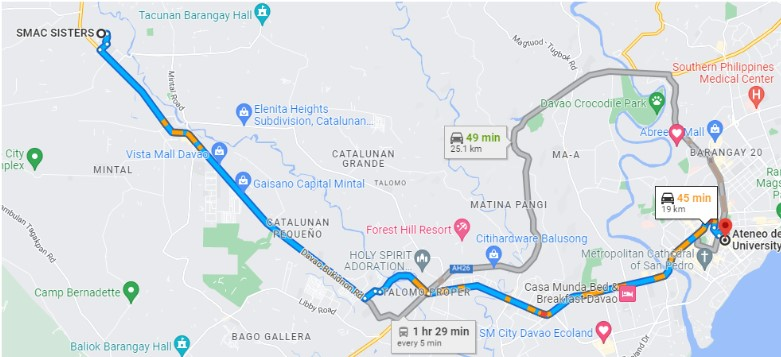

The SMAC institution or the The Sorelle Missionarie dell'Amore di Cristo arrived in the Davao City on January 17, 1998. It’s purpose was to take in and care for
abandoned, abused, and orphaned kids. Sisters such as current institution head, Sr. Luzminda C. Pepito, saught to provide for the needs of these kids with the
help of kind benefactors. They are able to give them food, water, a shelter, medical attention, education and more. They effectively supply them with all the
necessary needs to grow up holistically.
Location:Purok 6 Habana Compound 8022 Tugbok Davao City
The person responsible for founding The Sorelle Missionarie dell’Amore di Cristo was The Mother Foundress of the Community Madre Nanda Giamberardini, whose goal
was to provide a higher quality of service for children by implementing its services and adjust programs to prepare the center as an independent institution.
It's vision was to make children psychologically developed and socially adjusted, as well as teach them to practice Christian values, and to help them enjoy life
as much as they can. Currently, this role is being continued in the person of the foundations new head, Sister Luzviminda C. Pepito.
The people or organizations that are providing support to the institution are the Ateneo de Davao University Junior High School Community - students for their
regular program, parents, and faculty. The best thing Ateneo JHS provided the institution with is the tutorial program for the academic development of our Kids.
A lot of information is necessary so that we can determine whether or not this institution can be trusted and whether or not its members are treated fairly.
In order to ensure that SMAC is not a liability, we needed to know about other benefactors, where they got their money from, if the children they took in had
proper education and were healthy, if they catered to physically or mentally disabled children so that no child would be denied the same benefits that regular
children receive, among other things. Before working with a community, it is crucial to get to know them.
Learnings like Inductive reasoning and even Conjecture. We can use inductive reasoning to find patterns that may lead to the problems the institution is facing.
We can reach a Conjecture to help solve these problems. Other topics like angles, midpoint, and distance can be used as abstract concepts. Looking at things from
different angles, meeting at the midpoint that is fair for both parties, and being able to help others no matter the distance. These may not be what we have learned
but the concepts given help us see things differently.
The usual concerns/problems that this type of community might have is the lack of money and resources. Because the orginization does not support salaries, the SMAC
ins. depends on their benefactors which is the Ateneo de Davao University Junior High School community. Because of their benefactors, the SMAC ins, was able to receive
support and resources from them, like a tutorial program, not only that, the ADDU-JHS was also able to prove donations that includes books, pencils, blankets, etc.

Who to contact?
Sr. Luzviminda C. Pepito, SMAC
9432466811; 082 - 2930949; srluzvimindacpepito@gmail.com